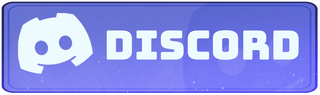
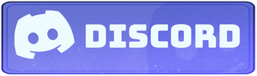

Qui suis je ?
Je suis Antoine Losty, un illustrateur passionné par l'art et la création visuelle. Mon domaine de prédilection est le character design, où je donne vie à des personnages à travers mes illustrations en mettant l'accent sur leur apparence, leur attitude et leur style vestimentaire. J'ai commencé à dessiner dès mon plus jeune âge et j'ai toujours été fasciné par la création de personnages expressifs. Je trouve mon inspiration principalement dans les films d'animation, tels que Le Voyage de Chihiro et Toy Story, qui regorgent de personnages incroyablement expressifs. Je suis également inspiré par d'autres artistes talentueux que je découvre sur les réseaux sociaux, comme Gabriel Soares. Je partage mes créations sur les réseaux sociaux, en particulier sur YouTube et Twitch. Sur ces plateformes, je réalise des vidéos et des lives où je partage mon processus de création et interagis avec ma communauté. J'apprécie l'aspect dynamique et spontané de la création de contenu, et je cherche toujours à montrer ma personnalité lors de mes vidéos et lives. En 2021, j'ai réalisé mon rêve en publiant ma première bande dessinée intitulée "Splash". Cette expérience m'a fait ressentir une grande satisfaction, car je considère qu'il est important de ne pas perdre sa passion lorsque l'on transforme son art en métier. Aujourd'hui, je suis constamment à la recherche de nouveaux projets et j'utilise Twitch et YouTube pour rester connecté à ma communauté. Travailler avec des youtubeurs a été une expérience enrichissante pour moi, mais je souhaite également développer mes propres projets personnels et éviter d'être uniquement identifié comme "l'illustrateur de" quelqu'un d'autre. J'encourage les adolescents qui souhaitent se lancer dans le dessin à ne pas se focaliser uniquement sur la recherche de renommée, mais plutôt à se concentrer sur le plaisir de créer et à persévérer dans leur pratique artistique. La motivation est la clé du succès dans ce domaine.
Me Contacter
Entre dans la communoté
 
